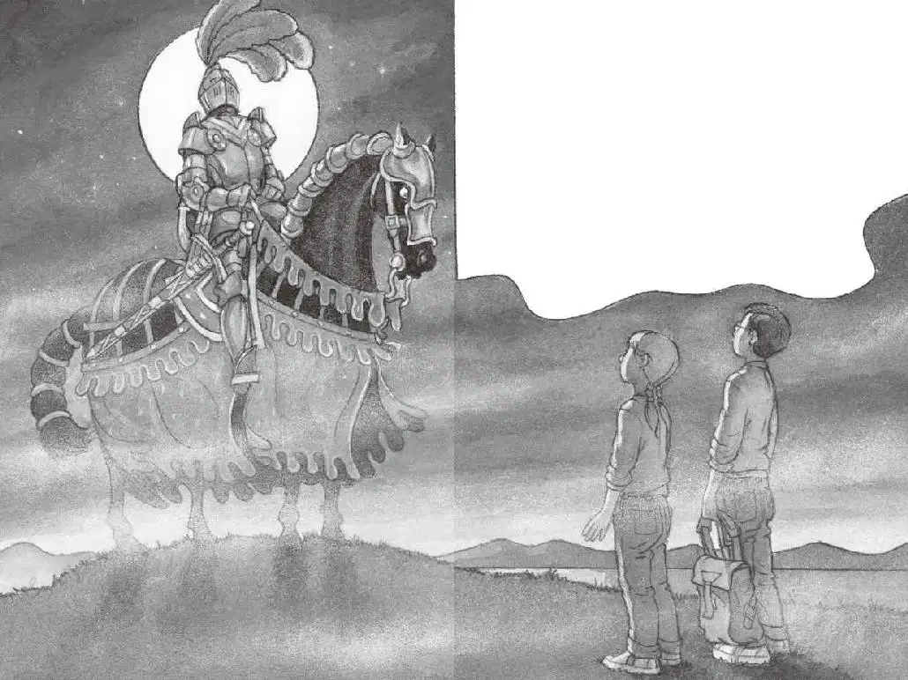

水灌进了杰克的鼻子，没过了他的头顶。
他连连咳嗽，手紧紧抓住刚刚滑落的眼镜，手臂胡乱挥舞着。
“杰克！”安妮在上面喊道。
“我在……护城河里！”杰克边说边大口地喘着气。
他想努力浮出水面，把眼镜重新戴上，但他的书包、鞋子和衣服，都太沉了。
扑通！
“嗨！我在这儿！”安妮喷了一口水说。
杰克听见安妮就在近处，可是却看不到人。
“哪边是岸啊？”安妮问。
“不知道！只管游吧！”杰克用狗刨的姿势在冰冷、漆黑的水里向前游。
他听见安妮也在游。
起初，安妮似乎游在他的前面，可是紧接着，他却听见后面传来扑通扑通的水声。
“安妮？”他大声喊。
“怎么啦？”安妮的声音是从前面传来的，不是后面。又是扑通一声。
是从后面传来的。
杰克的心脏几乎停止了跳动：“难道是鳄鱼？”
杰克的眼镜片上布满了一道道水痕，他什么也看不见。“安妮！”他轻声唤道。
“怎么啦？”安妮问。
“快点儿游！”杰克回道。
“我已经到了！就在岸边！”安妮小声说。
杰克在黑暗中顺着安妮的声音游去。
他想象着有一条鳄鱼正在后面追他。
突然，他摸到了一个湿漉漉的东西。
“啊！”他失声大叫。
“是我！快抓住我的手！”安妮说。
杰克抓住安妮的手，被她拖到了护城河边。
他们一起爬过堤岸，来到潮湿的草地上。
终于安全了！

杰克浑身都在颤抖，牙齿直打战。他抖了抖镜片上的水，把眼镜重新戴上。
雾太浓了，他看不见城堡，甚至连护城河都看不清，更别说鳄鱼了。
“我们……逃出来了。”安妮说。她的牙齿也在打战。
“对啊，”杰克说，“可是我们在哪儿呢？”他使劲望着迷雾中的黑暗。
吊桥在什么地方？风车呢？鹰房呢？树林和树屋呢？
所有的一切，仿佛都被浓得化不开的黑暗吞噬了。
杰克把手伸进潮湿的书包，掏出了手电筒。
他拧了一下开关，灯没亮，电池没电了。
他们俩被困住了，不是在地牢里，而是在寂静而寒冷的黑暗中。
“咴儿，咴儿！”
马的嘶鸣声打破了黑夜的寂静。
就在这时，云团散开了，一轮皎洁的圆月挂在天空中。
一片月光穿透迷雾映照下来。
杰克和安妮这才看见有个人在他们几步开外的地方。
是那名骑士。
他骑在那匹黑马上，盔甲在月光下闪闪发亮。
他的脸藏在头盔里，但眼睛似乎正注视着杰克和安妮。